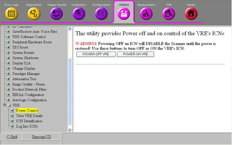

Operating Documentation
Direction 5670000, Rev# 1
Optima MR450w 1.5T Service Methods
Module Version 4.0, Version Date 8/19/08
Operating Documentation |
| ||||
| If the system is not shut down properly, equipment damage can occur. Cold booting may cause irreparable data losses. Follow the proper procedure for shutting down the system. | ||||
If the Host PC is powered off, press the power button to begin the startup process.
As the Host PC starts up, the Linux operating system launches. A welcome screen displays with a login prompt.
Most service functionality, including software updates and patches, can be performed with operator-level privileges. Because logging on as a super user allows you to make changes that can do irreparable damage to the system, do not log in as root unless necessary.
Log in with an operator-level user name and password. For example, user name: sdc and pw: adw2.0.
Logging on as an operator brings you to the Common Services Desktop, and a window displays the message: "Please do not interact with the system until this message disappears."
| NOTE: | During some startups, restarts, and shutdowns, the system may appear to have stalled. The system startup process can take an extended period of time. Give the system at least 30 minutes before calling the GE Online Center. |
Restarting the Host PC shuts down the system safely, and then automatically starts the system up again. Restarts are often required to finalize changes or updates.
To restart the system, click the arrow on the Tools High Level Access tab, select System Restart, and then click [Yes] to confirm the restart.
Illustration 1: Tools Tab System Restart

Shutting down the Host PC shuts down the system safely and turns off the power to the Host PC.
To shut down the system, click the arrow on the Tools High Level Access tab, select System Shutdown, and then click [Yes] to confirm the shut down.
When the Host PC is shut down or rebooted, the system's ICNs automatically shut down as well. Unless you are performing specific work on the VRE subsystem, the ICNs do not need to be shut down prior to shutting down the rest of the system.
To shut down the ICNs independently:
From the Tools High Level Access tab, select Service Browser. The MR Services Desktop opens as shown in Illustration 2.
Under the Utilities tab, expand the VRE section in the Toolbox navigation menu, and then select Power Control.
Illustration 2: ICN Power Control (16-Channel System)

Click [POWER OFF VRE] to disable ICNs on a 16-channel or 32-channel system.
A message displays indicating that the ICN is being disabled and it may take up to five minutes.
Once you disable the ICNs, restart the system for the changes to take effect.
| NOTE: | If you are working on a system with one ICN configured and you disable that ICN, the whole scanner goes down and the following message displays upon restart: VRE Configuration changes detected. Cannot accept the current VRE configuration changes as image reconstruction could no longer be performed. The current TPS reset will fail, please notify service. |
| NOTE: | If you are working on a system with two ICNs configured and you disable one, the channel count drops from 32 to 16. |